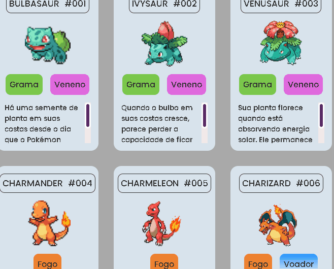
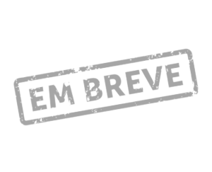

Sou Vinícius Múfalo,
estudante de Análise
e
Desenvolvimento de Sistemas.
Quem sou eu
Eu, Vinícius Cardoso Múfalo, formado em Medicina Veterinária pela USP e atualmente
estudante
de Análise e Desenvolvimento de Sistemas na Unicesumar, busco
colocar em prática o conteúdo da faculdade e dos cursos extracurriculares e ampliar meus conhecimentos na área de
programação.
Sou apaixonado por tecnologia e inovação. Pretendo trabalhar em empresa na área, por isso resolvi me
desafiar e iniciar uma nova faculdade para me inserir no mercado de tecnologia.
Entendo, principalmente, de tecnologias voltadas para Front-end. Clique em "habilidades" para mais informações.
Habilidades
Tive primeiro contato com HTML ao fazer um curso básico, após isso, resolvi me aprofundar, realizando outros projetos e cursos da ProWay oferecido pelo Programa Start by Capgemini. A contrução desse portifólio foi o projeto, até então, que mais precisei por em prática os conhecimentos.
O mesmo curso de HTML me levou a conhecer o CSS. Me interessei nessa parte de estilizar páginas e comecei a testar códigos. Também realizei outros projetos e cursos da ProWay, assim como, a criação desse portfólio. Continuarei me empenhando para criar páginas mais elaboradas e criativas.
O JS está sendo mais desafiador de colocar em prática quando comparado ao HTML e o CSS, no entanto estou buscando aprender e entender melhor como aplicar os conceitos básicos para poder tornar minhas páginas mais dinâmicas e profissionais.
A linguagem C é a mais utilizada na minha faculdade e foi ensinada desde o início, passando pela lógica de programação aplicada à essa linguagem.
Tive contato com Java na "Trilha Java" oferecido pelo Programa Start by Capgemini e também na matéria de Java na Faculdade. Ainda não realizei nenhum projeto utilizando tais conhecimentos, mas sigo estudando e em breve irei aplicar.
Tenho conhecimento em edição de vídeo pois já editei para meu antigo canal no Youtube e trabalhos da faculdade. O software que tenho maior familiaridade é o ShotCut.
*/Passe o mouse no ícone para mais informações/*
Projetos
Curriculo Vitae Este foi meu primeiro projeto, utilizando apenas HTML e CSS.
Projeto Pokedex Projeto realizado durante um curso para aprender o básico de HTML, CSS e JS.
 *Em desenvolvimento* *Descrição do terceiro projeto*
Contato
Se você busca uma pessoa que gosta de aprender e colocar os conhecimentos em prática, eu sou essa
pessoa
e estou ancioso para poder trabalhar com você 😀
Alguma dúvida ou sugestão? Entre em contato.
Imagem início: desenvolvido por RT Studio e vem de https://pt.pngtree.com/freepng/flat-design-concept-of-programmers-at-work-mobile-app-software-development-with-characters-can-use-for-web-banner-business-analysis-landing-page-website-template-vector-illustration_5870919.html?sol=downref&id=bef